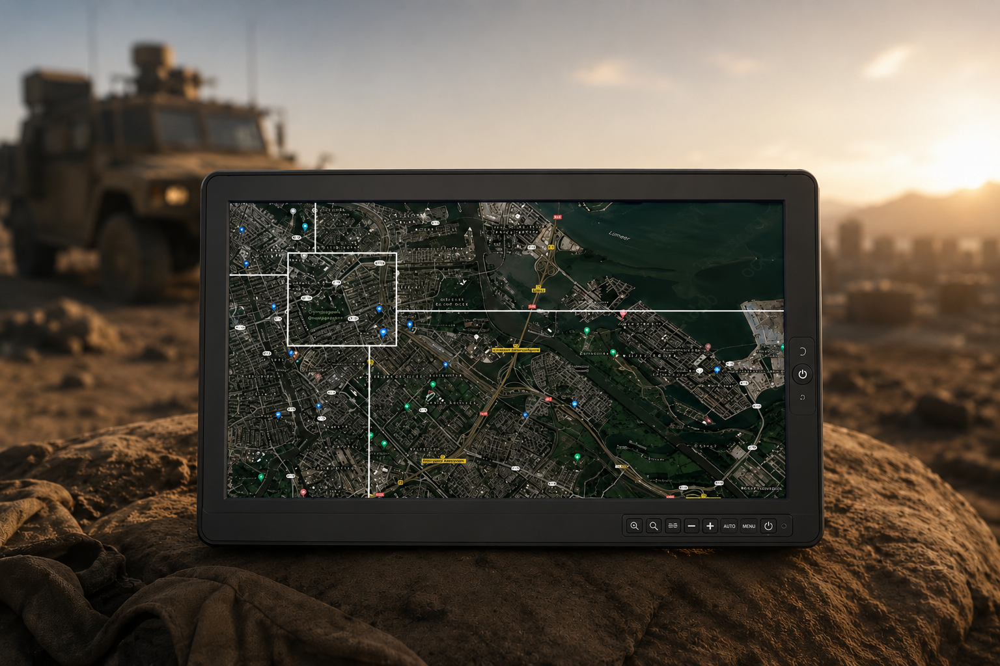
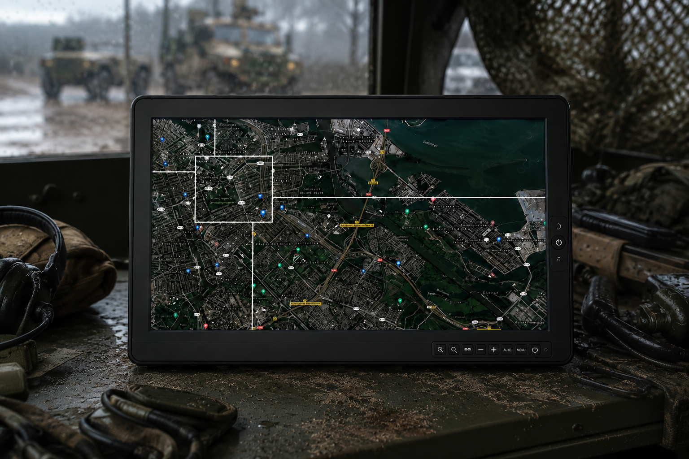

01. 방위용 러기드 태블릿이 필요한 이유
일반적인 노트북은 사무실, 가정, 교육 환경처럼 비교적 안정적인 조건에서 사용됩니다. 하지만 방위 현장에서는 고온과 저온, 먼지, 습기, 낙하 충격, 지속적인 진동 등 훨씬 까다로운 조건에 노출될 수 있습니다.
따라서 방위 인력에게는 현장 이동 중에도 안정적으로 작동하고, 원격 지역에서도 통신과 데이터 확인이 가능한 모바일 컴퓨팅 장비가 필요합니다.
일반 소비자용 노트북이나 태블릿은 실내 중심의 사용 환경을 기준으로 설계됩니다. 반면 방위 현장에서는 충격, 진동, 습기, 강한 햇빛, 원격 통신 환경까지 고려한 견고한 모바일 컴퓨팅 장치가 필요합니다.

일반적인 노트북은 사무실, 가정, 교육 환경처럼 비교적 안정적인 조건에서 사용됩니다. 하지만 방위 현장에서는 고온과 저온, 먼지, 습기, 낙하 충격, 지속적인 진동 등 훨씬 까다로운 조건에 노출될 수 있습니다.
따라서 방위 인력에게는 현장 이동 중에도 안정적으로 작동하고, 원격 지역에서도 통신과 데이터 확인이 가능한 모바일 컴퓨팅 장비가 필요합니다.
방위용 러기드 태블릿은 낙하, 충격, 진동, 습도, 온도 변화 등 다양한 환경 조건에서도 성능을 유지할 수 있어야 합니다. 이를 확인하기 위해 대표적으로 MIL-STD-810 계열 시험 기준이 사용됩니다.
또한 전자파 간섭에 대한 대응이 필요한 환경에서는 MIL-STD-461과 같은 EMI 관련 기준도 함께 검토할 수 있습니다. 제품을 선택할 때는 단순히 인증 문구만 확인하기보다 어떤 조건과 방법으로 시험되었는지 확인하는 것이 중요합니다.
IP 등급은 장치가 먼지와 물의 침투로부터 어느 정도 보호되는지를 나타내는 기준입니다. 방위 및 산업 현장에서는 장비가 비, 먼지, 진흙, 세척수 등에 노출될 수 있기 때문에 IP 등급은 필수적으로 확인해야 할 항목입니다.
예를 들어 IP65는 방진 구조와 저압 물줄기에 대한 보호를 의미하며, IP67은 일정 조건에서 일시적인 침수에 대한 보호까지 고려할 수 있습니다. 필요한 등급은 실제 사용 환경과 노출 조건에 따라 달라집니다.

방위 장비는 일반 상용 장비보다 훨씬 높은 내구성과 안정적인 연결성이 요구됩니다. 특히 군용 커넥터로 사용되는 MIL-STD-38999 계열 원형 커넥터는 충격, 진동, 습기, 먼지에 강해 방위 및 항공우주 환경에서 널리 사용됩니다.
러기드 태블릿은 LAN, USB, RS-232, RS-422, DC 전원 입력 등 다양한 인터페이스를 안정적으로 지원해야 하며, 기존 장비와 원활하게 연결될 수 있는 확장성도 중요합니다.
방위용 모바일 장비는 야외에서 사용되는 경우가 많기 때문에 강한 햇빛 아래에서도 화면을 선명하게 확인할 수 있어야 합니다. 이를 위해 고휘도 디스플레이, 눈부심 방지 처리, 광학 본딩 기술 등이 활용됩니다.
광학 본딩이 적용된 디스플레이는 반사를 줄이고 선명도를 높이는 데 도움을 주며, 긁힘 저항성과 화면 내구성 측면에서도 장점을 가질 수 있습니다.
현장 작전에서는 실시간 정보 접근과 위치 확인이 매우 중요합니다. 러기드 태블릿은 Wi-Fi, Bluetooth, LTE 또는 5G와 같은 무선 통신 기능을 통해 원격 환경에서도 데이터를 주고받을 수 있어야 합니다.
또한 GPS 기능은 이동 중 위치 확인과 임무 수행에 중요한 역할을 하며, 안정적인 무선 연결성은 현장 대응 속도와 작전 효율성을 높이는 데 기여합니다.
방위용 러기드 태블릿은 단순히 튼튼한 태블릿이 아니라, 혹독한 환경에서도 안정적으로 작동하고 기존 장비와 연결되며 실시간 데이터 접근을 지원하는 전문 모바일 컴퓨팅 장치입니다.
초기 비용은 일반 소비자용 장비보다 높을 수 있지만, 내구성과 신뢰성을 고려하면 장기적으로 장비 수명과 총소유비용 측면에서 더 효율적인 선택이 될 수 있습니다.